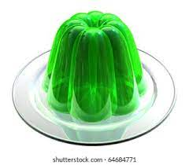

Green Goo

About the Recipe
Green goo is an authentic alien dish from galaxy M37-143. It was brought to Earth by the pioneer Crimbus Careembus. It's a savory dish with a strong after taste that will leave you longing for more.
To start, we're gonna need some green Jell-O or anything similar, find it in your local shop or order online from Alienzone.
Ingredients
- 1 pack green Jell-O
- 2 cups water
- Spoon for stirring
Steps
- Bring water to a boil
- Empty Jell-O packets in boiling water, let it cook for 30 minutes with occasional stirring
- Pour in cups and let it cool down
- Put it in the fridge for at least 2 hours before serving to allow goo to maintain its shape